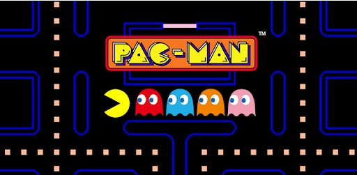
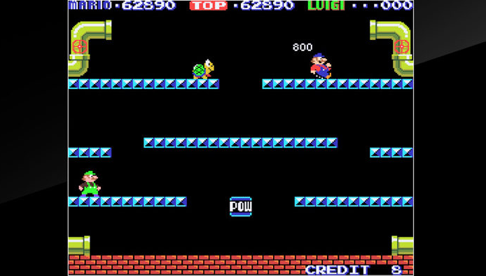
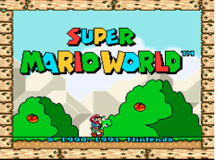

PAC-MAN
PAC-MAN
Pac Man (パックマン Pakku Man?) es un videojuego arcade creado por el diseñador de videojuegos Toru Iwatani de la empresa Namco, y distribuido por Midway Games al mercado estadounidense a principios de los años 1980.
Evolución
Pac Man (パックマン Pakku Man?) es un videojuego arcade creado por el diseñador de videojuegos Toru Iwatani de la empresa Namco, y distribuido por Midway Games al mercado estadounidense a principios de los años 1980.
Pac-Man y fantasmas.

Cada uno de los fantasmas tiene una personalidad diferente; Blinky (Rojo) es el más agresivo y su objetivo siempre va a ser matar a Pac Man, casi siempre está en modo persecucion. Blinky es el único de los fantasmas cuya velocidad aumenta según vayas avanzando en el nivel. En Japón su personaje se describe como “Oikake” que se podria traducir como “Aquel que persigue” Pinky (Rosa) siempre busca acorralar a Pac Man; su objetivo siempre es cortarle el camino a Pac Man para que Blinky pueda capturarlo. Incluso cuando está en modo de persecución, su objetivo nunca es comerse a Pac Man.
MARIO BROS
MARIO BROS
Mario Bros. (マリオブラザーズ Mario Burazāzu?, lit. Hermanos Mario) es un videojuego de arcade desarrollado por Nintendo en el año 1983. Fue creado por Shigeru Miyamoto. Ha sido presentado como un minijuego en la serie de Super Mario Advance y otros juegos. Mario Bros. ha sido relanzado para Wii, Nintendo 3DS y Wii U en los servicios de Consola Virtual en Japón, Norteamérica, Europa y Australia. Fue la tercera aparición de Mario, y la primera que aparece con su nombre definitivo, ya que en Donkey Kong (1981) aparecía bajo el seudónimo de Jumpman (‘saltador’).
LOS INICIOS DE MARIO BROS
Curiosamente, el primer Mario que salió a la luz no tuvo un título propio. De hecho, el juego se llamaba Donkey Kong. Seguro lo conoces, es el famoso juego en el que “DK” lanza los barriles y un personaje de rojo debe esquivarlos. Ese muñequito con gorra roja se llama Jumpman, quien años después evolucionaría en Mario.
SUPER MARIO WORLD
Super Mario World apareció a inicios de los 90 y fue uno de los juegos más vendidos. Mario disminuyó su tamaño y era un personaje digital más definido. Lo mejor de este juego, además de los múltiples mundos, fue la aparición de su más grande compañero: Yoshi, una especie de dinosaurio verde que comía enemigos y manzanas para volverse más fuerte.
